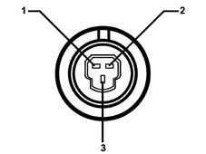
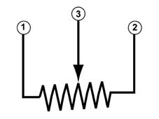

5040BC CLIMATE CONTROL COMPRESSOR LINEAR SENSOR ON/OFF CHECK
- Path
- Test > 50 AUXILIARY UNITS > 5040 AIR CONDITIONING CASING AND COMPONENTS > 5040B SYSTEM SAFETY CHECK DEVICES > 5040BC CLIMATE CONTROL COMPRESSOR LINEAR SENSOR ON/OFF CHECK
- Kind
- test / check procedure
- Applies to
- all engines; all production periods
- Interactive page
- https://sloeber94.github.io/elrnDB-fUlss/en/#/179006799
Applies to: all engines; all production periods
1. Disconnect the electrical connection for the linear sensor.

1. Connect a linear potentiometer (end of scale 1 Kohm, previously positioned at around 500 ohm between the centre pin andone of the side ones) to the pins of the linear sensor electrical connector.

Place the key in the ON position
Using a multimeter, check that the voltage between pins 2 (earth) and 3 is around 2.5V.
Switch on the engine and switch on the air conditioning using the special switch located on the climate control system control unit.
The climate control system should come on normally in these circumstances.
Alter the potentiometer resistance until the voltage reading on the multimeter between pins 2 (earth) and 3 is about 0V.
The air conditioning system should switch off in these conditions because the engine management node receives low circuit pressure information.
Alter the potentiometer resistance until the voltage reading on the multimeter between pins 2 (earth) and 3 is about 4.6V.
The air conditioning system should switch off in these conditions because the engine management node receives high circuit pressure information.
1 +5v
2 Earth
3 Signal